Step 1:
Refer to Figure 7.22 in the textbook for the circuit.
Since the circuit is current mirror and the transistors  and
and  are matched, the output current is equal to the reference current.
are matched, the output current is equal to the reference current.
The output current in the circuit is equal to the drain current of the device.

Substitute  for , for
for , for  , 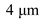 for
, 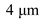 for  , 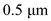 for
, 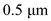 for  , and
, and  for
for  in the equation.
in the equation.
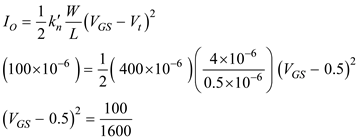

The condition is not acceptable.
Hence, the gate to source voltage is, .
Step 2:
Calculate the resistance  of the current mirror.
of the current mirror.
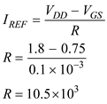
Thus, the value of  is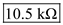.
is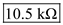.
Step 3:
As have the same
have the same  and the lowest value of is obtained when the drain source current just matches.
and the lowest value of is obtained when the drain source current just matches.
Hence, the lowest possible value of is 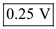.
Step 4:
Calculate the output resistance of the current source.
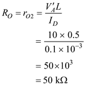
Hence, the output resistance of the current source is, .
Step 5:
Find the change in output current for 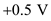change in.
Thus, the change in output current for change in  is 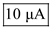.
is 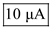.